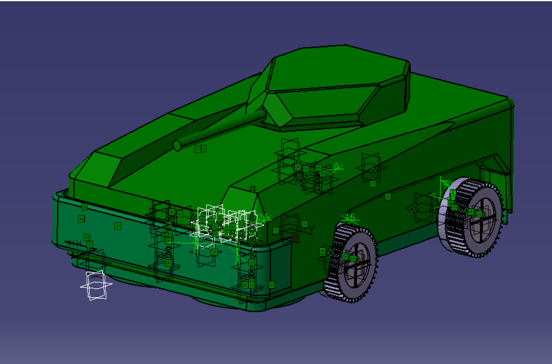
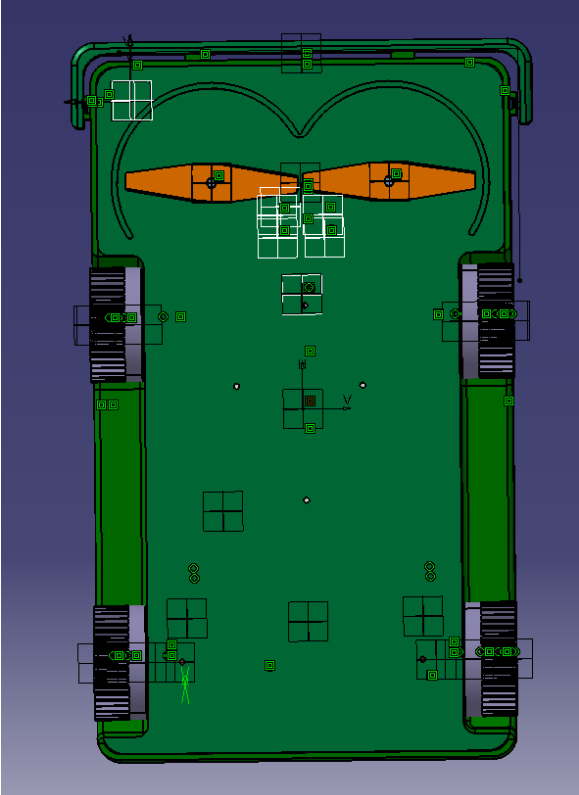
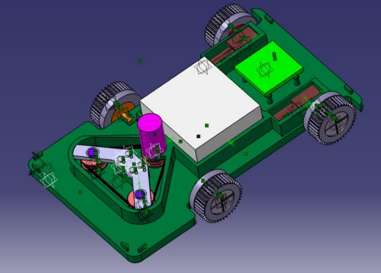
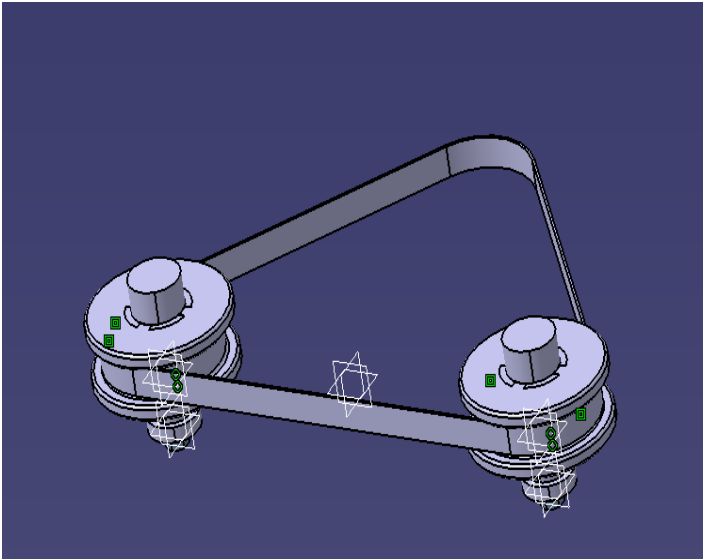
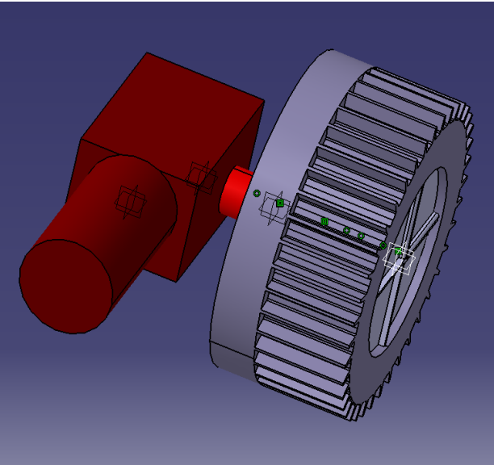

Description du projet
Projet de 70 heures réalisé en équipe de six à l'INSA Hauts-de-France : concevoir, de l'expression du besoin jusqu'au modèle 3D complet, un robot tondeuse autonome destiné aux grands jardins en pente.
Encadrée par quatre enseignants, l'équipe devait parcourir toutes les étapes de la conception d'un système automatisé : organisation du travail, cahier des charges, calculs de dimensionnement, choix des composants mécaniques et électroniques, puis modélisation CAO. En cours de projet, les attentes ont évolué : le robot n'a finalement pas été fabriqué et l'étude est restée numérique. Nous l'avons donc conçu pour qu'il soit le plus réalisable possible (pièces pensées pour l'impression 3D, câblage et encombrement vérifiés sur la maquette).
Mon rôle dans l'équipe
L'équipe s'est organisée en six rôles (chef de projet, deux ingénieurs mécanique, un électronicien, un automaticien, un spécialiste capteurs), chaque membre en cumulant deux pour que tout le monde touche à plusieurs domaines et confronte ses points de vue. J'ai occupé le binôme Conception & Hardware :
- Conception : conception pour la fabrication (DFM), choix des matériaux, définition du châssis et de la coque pour une production par impression 3D.
- Hardware : schémas de câblage, distribution de puissance, dimensionnement et choix de la batterie, choix du microcontrôleur.
Organisation et gestion de projet
Le pilotage s'appuyait sur un diagramme des rôles, une matrice des risques avec sa matrice de criticité, un PDCA et un diagramme de Gantt. Comme le projet a pris un tournant virtuel, nous avons conservé le PDCA et le Gantt d'origine : les phases de vérification et de pilotage sont donc peu renseignées. Je le signale dans le rapport car c'est un enseignement en soi : un planning doit être remis à jour quand le périmètre change.
Cahier des charges
Les clients visés sont les propriétaires de grands espaces verts. Trois enjeux ont donné trois exigences mesurables :
| Repère | Exigence | Valeur cible | Validation |
|---|---|---|---|
| R01 – Dynamique | Franchir une forte pente sans basculer ni patiner | pente ≥ 35 % | Calcul analytique |
| R02 – Énergie | Autonomie suffisante pour de grandes surfaces | ≥ 120 min | Calcul de puissance |
| R03 – Géométrie | Largeur de coupe réduisant le nombre de passages | 30 cm | CAO et essai terrain |
Solutions retenues : des chenilles pour l'adhérence et la stabilité en pente, des lames à l'avant pour une grande largeur de coupe, un espace batterie agrandi et un centre de gravité abaissé, et un guidage par GPS, adapté aux grands terrains sans câble périphérique à installer.
Dimensionnement : ce que les calculs ont décidé
Les calculs reposent sur des hypothèses de départ (robot de 15 kg, 25 cm de haut, vitesse maximale de 3 km/h, roues de 5 cm de rayon), ajustées au fil de la conception.
| Étude | Méthode | Résultat |
|---|---|---|
| Stabilité en pente | Équilibre statique, moments en B, cas montée/descente et dévers, marge de 5 cm sur la position du centre de gravité | Centre de gravité sous 28,5 cm : avec 25 cm de hauteur, le robot ne bascule pas à 35 % |
| Traction des chenilles | Résistance au roulement (herbe sèche / humide) et limite d'adhérence de Coulomb | Effort total entre 69,4 N et 152,8 N sur herbe mouillée (236 N sur sec), soit 1,74 à 3,82 N·m par moteur |
| Puissance de propulsion | P = C·ω à 160 tr/min, rendement moteur ≈ 80 % | 29 à 64 W mécaniques, 36 à 80 W électriques par moteur |
| Coupe | Frottement des brins, effort de coupe, densité du gazon, 2 lames de 15 cm | 0,34 N·m, ≈ 119 W de coupe, ≈ 190 W électriques avec marge |
| Arbres | Diamètre minimal selon le couple, le porte-à-faux et la limite élastique (acier / PETG) | Arbres de 15 mm pour les chenilles ; 10 mm pour les lames (6,7 mm minimum) |
| Courroie de coupe | Effort tangentiel comparé à la charge admissible (≈ 9 N/mm de largeur) | Courroie lisse 520 × 10 × 0,9 mm validée |
Choix des composants et électronique
L'architecture électronique comporte quatre sous-systèmes : commande, localisation, actionnement et sécurité. Un microcontrôleur STM32 F401RE pilote deux motoréducteurs 24 V à vis sans fin (chenilles) et un moteur de lames via des ponts en H. Un module Wi-Fi ESP8266 relie le robot à une application mobile, et un convertisseur DC-DC alimente la carte en 5 V. Côté capteurs : GPS avec antenne, accéléromètre-gyroscope (pente, détection de soulèvement), capteur à ultrasons pour anticiper les obstacles et capteurs de choc dans le pare-chocs en dernier recours, avec un bouton d'arrêt d'urgence.
Pour la batterie, la puissance maximale cumulée (2 × 80 W, 190 W pour les lames et 15 W d'électronique) donne un courant de 15,2 A. Deux heures d'autonomie exigeraient 30,4 Ah, soit 730 Wh.
Un compromis assumé. J'ai retenu une batterie lithium 24 V de 20 Ah (573 Wh), légèrement sous ce minimum théorique. Les calculs utilisent les puissances maximales (pente et herbe mouillée) et le robot pèse environ 11 kg au lieu des 15 kg prévus : l'autonomie de 2 h reste atteignable en usage normal.
Budget : les composants totalisent 764 € pour un objectif initial de 100 €. L'écart est important mais sans conséquence ici, puisque la fabrication n'est plus prévue.
Conception CAO
Le robot a été entièrement modélisé sous CATIA V5 : châssis, roues, arbres, poulies et courroie, lames, coque avec pare-chocs et composants électroniques. L'assemblage virtuel a permis de vérifier les encombrements, l'alignement des poulies, l'absence d'interférences en rotation et la sécurité du positionnement des lames, avant toute fabrication. Châssis, roues, arbres et coque sont conçus pour l'impression 3D afin de réduire les coûts ; les poulies et tiges de lames auraient été en acier.
Bilan
Le cahier des charges est respecté sur le papier (pente, autonomie, largeur de coupe) et la conception est cohérente. Les limites sont connues : pas de prototype, pas de programmation ni de tests terrain, et un budget très dépassé. Ce projet m'a surtout appris à relier calcul, choix de composants et CAO, et à travailler à six sur un système mêlant mécanique, électronique et automatique.
Compte-rendu du projet (rapport de 45 pages)
Le rapport détaille la démarche complète : organisation, calculs pas à pas, nomenclature chiffrée et rendus CAO.
Télécharger / consulter le compte-rendu du robot (PDF)
Galerie CAO du robot




